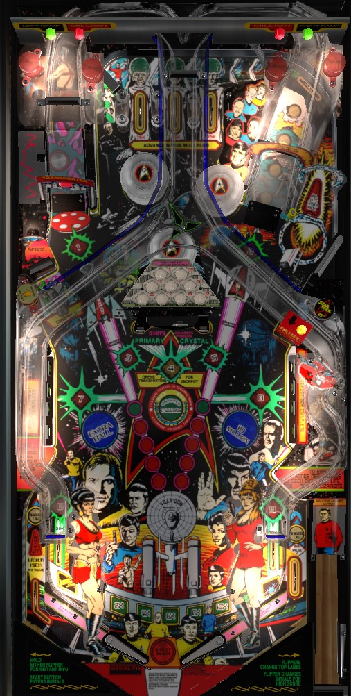

Sometimes referred to as Data East Star Trek or (ambiguously) simply Star Trek.
Not to be confused with Star Trek (Gottlieb, EM, 1971), Star Trek (Bally, SS, 1978), Star Trek: The Next Generation (Bally Williams, DMD, 1993), Star Trek Pro/Premium/Limited Edition (Stern Pinball, DMD, 2013), or Star Trek Vault/Premium Vault (Stern Pinball, DMD, 2018).
Multiball is the main draw on DE Star Trek. Collect the 8 dilithium crystals at the two ramps, the two in lanes, the two center white standup targets, and by completing the two banks of drop targets. After getting all 8, shoot the Primary Crystal swinging target to light multiball, then shoot under the left ramp to start it. In multiball, the swinging target opens the jackpot, the left ramp collects, and either ramp relights the center to repeat the process. If getting to or staying in multiball is too hard, you can get a decent score from ramps all day, qualifying Ramp Millions for 3+ ramps in a row or Unlimited Millions for every 5 shots to each ramp.
The skill shot is a timed press of the button plunger on the front of the game, when the enemy ship on the dot display is aligned with the crosshairs in the center. A direct hit to the enemy ship scores 1,000,000 points times the number of the current ball in play. A glancing blow, where the enemy ship is slightly misaligned, scores 250,000 points times the number of the current ball in play. A complete miss scores 100,000 points times the current ball number.
Roll through an unlit top lane to light it. Forward and backward lane change are available with the flipper buttons, allowing the player to move the lit top lanes. Completing the top lanes advances the bonus multiplier in the sequence 2x-4x-6x-8x-10x, or 1,000,000 points if the bonus multiplier is already maxed out at 10x.
8 features around the game are labelled as Dilithium Crystals. 1 and 2 are the two ramps; 3 and 5 are the standup targets in the center of the table on either side of the swinging target; 6 and 9 are the two in lanes; 7 and 8 are the banks of drop targets on the sides of the table. Both the playfield and the trapezoid of lights above the swinging target indicate which crystals have been collected; lit ones have been scored, and flashing ones are still needed. For the ramps, in lanes, and center standup targets, only one shot to the feature is needed to collect the crystal, but for the drop targets, you must clear the entire bank of targets to earn that side's crystal. This makes the drop targets by far the hardest crystals to collect.
The left scoop can sometimes spot crystals. For the first multiball, this scoop is always lit to spot a crystal. For the second multiball, this scoop will only spot a crystal for a few seconds immediately following the right in lane switch being triggered. The scoop is not available to spot crystals at all for the 3rd multiball or thereafter.
After all 8 standard crystals have been collected, the final crystal- the Primary Crystal, labelled #4- can be collected at the swinging target. After the swinging target is hit, the left ramp will raise for 30 seconds; shoot a ball into the Transporter underneath this raised left ramp to start multiball. If you do not shoot the Transporter in time, the left ramp will lower again, and you must re-collect the Primary Crystal at the swinging target to earn another chance.
Only one lock at the Transporter is required to start multiball, which always has 3 balls. Check out the Star Trek crew members "disappearing" on the backglass when multiball starts. During multiball, almost every other table feature is in play; all ramp shots score 500,000 points, and Scanner mystery awards, Ramp Millions, and Unlimited Millions can still be qualified. However, the main draw of multiball is Jackpots. Hit the Primary Crystal swinging target to raise the left ramp yet again. This time, though, you only have 15 seconds to shoot a ball under the left ramp and score a jackpot at the Transporter before the left ramp loweres and the swinging target needs to be re-hit. After collecting a jackpot, you need to shoot either ramp one time before the swinging target is ready to raise the left ramp and qualify another jackpot. The first 5 jackpots score 5,000,000, then 10,000,000, then 15,000,000, then 20,000,000, then 25,000,000. The sixth jackpot is a super jackpot worth 50,000,000, and all jackpots starting with the 7th are super duper jackpots worth 100,000,000 points. These jackpot values cannot be raised in any way. If time runs out on the Transporter Jackpot timer on a regular jackpot, you only need to hit the swinging target again to reopen the Transporter under the left ramp, but if the time runs out when going for a super or super duper jackpot, you need to shoot a ramp again before hitting the swinging target gives you another chance. (If you are playing the fanmade 3.00 version of the code, it takes 2 ramp shots to qualify the 2nd jackpot, 3 ramp shots to qualify the 3rd jackpot, etc.) There is a brief ball save at the start of multiball, as indicated by the "shields on" lights above the out lanes, but there is no quick multiball restart, even if the multiball ends before a single jackpot was collected.
Both ramps feed the center diverter, which serves to alternate which in lane a ramp ball is served to. Shooting either ramp causes one ramp to light green solidly, and the other ramp will flash green. Green lights extinguish if 5 seconds pass without either ramp being shot. If you score the flashing green ramp before it times out, both ramps will light red, and Ramp Millions begins. Now, all ramp shots score 1,000,000 points for as long as the ramps are lit red; once again, they unlight after 5 seconds of no ramp being scored. The end effect of this is that after 2 consecutive ramp shots (if the first ramp was diverted to the opposite flipper) or 3 consecutive ramp shots (if the first ramp was diverted to the same flipper), all ramps score a repeatable 1,000,000 points until you miss. Ramps on Star Trek are relatively wide compared to most games, and getting into a rhythm of comboing ramps back and forth is much more reasonable than it would be even on other Data East titles. It's a bit grind-heavy and one-dimensional, but if you can dial in the ramp shots consistently, you can get a good score focusing on just the 1,000,000 points per shot from Ramp Millions.
There are 5 Phazer inserts in the table pointing at each ramp; 4 red, and 1 green. Making the left or right ramp lights one inserts on that side. Shooting past the center swinging target and into the Primary Crystal scoop adds one light to whichever side currently has fewer lit inserts. Lighting all 5 inserts on each side immediately starts Unlimited Millions. For 20 seconds, hitting the swinging target itself scores an increasing value starting at 3,000,000 points and increasing by 1,000,000 each time, and shooting past the swinging target into the scoop scores 1,000,000 points. If you shoot the scoop, the Unlimited Millions timer does not stop as the ball is being moved and kicked out, so missing the swinging target effectively entails a 5-second penalty for the mode. Unlimited Millions can be started in multiball, which is the ideal time to do it, since a missed swinging target shot is less punishing and a made swinging target shot that returns straight down the middle doesn't punish you by ending your ball.
The right scoop is always lit for a Scanner mystery award, even during multiball. It can give a variety of features, including several modes that don't appear anywhere else in the game.
When you reach the game's replay score, Victory Laps instantly begins. For 15 seconds, shooting any ramp scores an increasing value: 1,000,000 for the first ramp, increasing by 500,000 with each subsequent ramp, with a limit of at least 3,000,000 points.
Star Trek has a conventional in/out lane setup. In lanes score 30,000 points, award dilithium crystals #6 and #9, and the right in lane briefly lights the left saucer for Light Crystal if multiball has been played exactly once. Outlanes score Big Value, which appears to be a random multiple of 50,000 points between 250,000 and 500,000.
There is an automatic kickback in the left out lane that is lit at the start of each ball and unlights once used. Relight it if it is not lit by shooting the right orbit shot that returns to the top lanes; this is a surprisingly narrow thread-the-needle shot between the right scoop and the right ramp.
Bonus is a count of switch hits. The game manual says each switch hit adds 5,000 points to the bonus, but there are definitely some switches that give more or less than 5,000 points in multiples of 2,500. Max base bonus is 500,000 points. Bonus multiplier is advanced in the sequence 2x-4x-6x-8x-10x by completing the top lanes or by a Scanner mystery award. Scanner mystery awards can also instantly max out either the base bonus or the multiplier. There is no way to carry over base bonus or multiplier from one ball to the next, and there is no mid-ball bonus collect.
Extra balls and specials can be disabled, but I am not sure how many points they award instead in competition/novelty play.
Dilithium Crystals toward multiball and Phazer lights toward Unlimited Millions can be set to clear after each ball, resetting progress. By default, progress is carried over from ball to ball.
The Jackpot timer can be set to 10, 12, 15, 20, or 25 seconds. The Unlimited Million timer can be set to 15, 17, 20, 22, or 25 seconds.
The dilithium crystals earned from drop targets (#7 and #8) can be tied together so that earning one of them gives credit for both. This setting appears to only apply to the progression towards the first multiball.